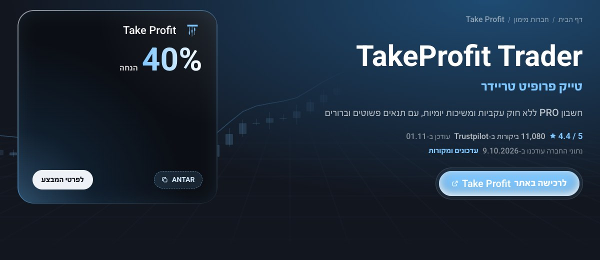
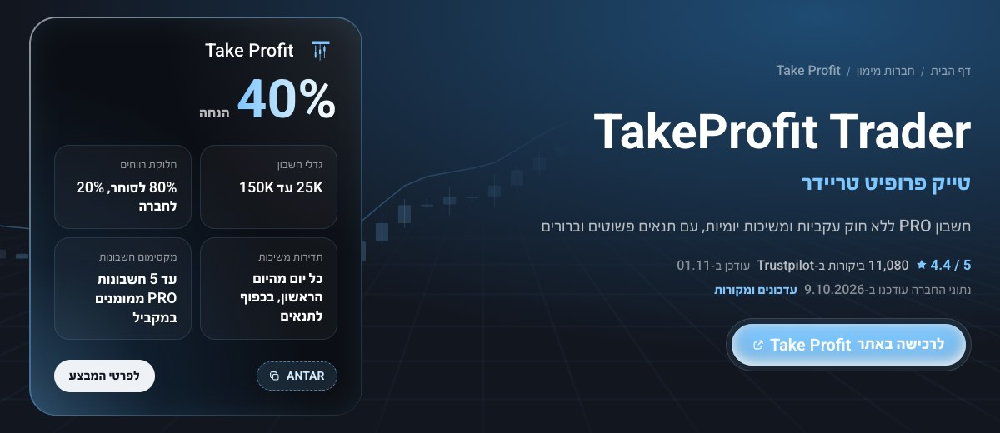
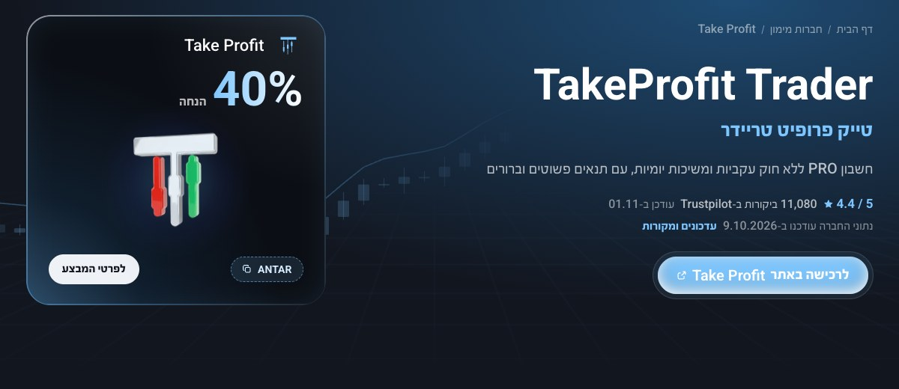

כרטיס ההנחה בדף חברה - סקיצות
על דף טייק פרופיט בדסקטופ. בכל סקיצה יש קישור לדף החי כדי לראות אותה בגודל אמיתי.
היום
הכרטיס כמו שהוא עכשיו: רק האחוז, הקוד והכפתור, והאמצע ריק. לפתוח בדף

אפשרות א: עובדות על החשבון
מתחת לאחוז ארבע משבצות מהנתונים של נועם: גדלי חשבון, חלוקת רווחים, תדירות משיכות ומקסימום חשבונות. אותן משבצות של "החשבון במבט אחד". לפתוח בדף

אפשרות ב: הלוגו התלת ממדי
הלוגו התלת ממדי של החברה במרכז, עם אור תכלת מאחוריו ותנועת ריחוף עדינה. לפתוח בדף
